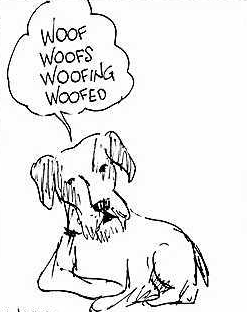

Linguistics
A Brief Introduction
Linguistics is the systematic and scientific study of human language. It's origins go back to the study of classical authors and languages in the Renaissance and into the early 19th century. The Rosetta Stone, discovered at the end of the 18th century, contained an ancient bilingual text which provided the key to understanding Egyptian hieroglyphics and generated a good deal of interest in ancient languages. European scholars in particular were influential in the early study of languages. The Grimm Brothers in Germany were interested not only in origins of fairy tales but also of languages. German linguists in the 19th century led the way in the study of languages such as Sanskrit.
Today, historical and comparative linguistics, such as that done in the 19th century, continues, focusing on how languages have developed and how they differ, but there is more interest today in descriptive linguistics, This is the study of how language is structured and how it is used by contemporary speakers of the language. Particular influential in the direction of linguistics study today are Ferdinand de Saussure, the father of structural linguistics and Noam Chomsky, the originator of transformational grammar. Specific areas of study in linguistics today include phonetics, morphology, syntax, and semantics.
Have you read the intro?


Phonetics is the study of the sounds of a language. In English, and in many other languages, how words are spelled does not necessarily correspond to how they are pronounced. Some languages are much closer in pronunciation to the way they are spelled. English is notorious for its erratic spelling in relation to pronunciation.
An important aspect of the study of phonetics is learning the International Phonetic Alphabet (IPA), whose symbols are used to describe specific sounds. The IPA is independent of any specific language, all world languages can be transcribed using its symbols, which include sounds such as the clicks used in some African languages. The word "fish" is rendered in IPA as / fɪʃ /. Note that the IPA symbols are placed between slashes.
Here are some of the IPA symbols for English vowels:
| ɑ | father | ʌ | run, enough | |
|---|---|---|---|---|
| ɪ | sit | ɑ | not, wasp | |
| i | see | ʊ | put, wood | |
| ɛ | bed | u | soon, through | |
| æ | lad, cat, ran | ə | about |



The concept of morphology is not unique to linguistics. In fact, it was first used by the German writer Goethe in the early 19th century in relation to plants, as a way to describe the different varieties of plants that have arisen from common ancestors. In addition to biology, morphology is also used in fields as diverse as astronomy and folklore studies.
In linguistics morphology is the study of how the forms of words change when used in actual speech, including endings and transformations which indicate how words grammatical function. In the sentence "he sees the children", the "s" is added to the verb see when it is used in the 3rd person singular and "children" is the plural transformation of "child".
Some languages have extensive sets of changes to words such as nouns and adjectives. French and Spanish, for example, change forms of adjective endings for masculine versus feminine nouns. German and Russian have much for extensive endings, that correspond to changes in grammatical case, i.e. different endings for nominative (subject case), accusative (direct objects) and for dative (indirect objects). On the other hand, some languages, such as Chinese, undergo very little in the way of word transformations. Plural forms in Chinese, for example, are identical to singular forms.


Syntax involves the way that words are put together to construct sentences. In English normal word order is subject - verb - object as in "We saw him". Word order varies in different languages. In English word order is important in determining grammatical function, for example, whether a noun is a subject or direct object. This is because English is not a heavily inflected language, that is it does not have a rich set of endings. In contrast, in languages like German or Russian, word order is often not as important as case endings in determining grammatical function.
Syntax is also concerned with sentence connectors such as conjunctions. In English, clauses are often combined with coordinating conjunctions ("and", "but"), subordinating conjunctions ("because", "although"), or adverbs ("however", "nevertheless"). Longer sentences with more than one clause are compound sentences, while short utterances without a verb are called ellipses.


In linguistics semantics is the study of the meaning of words. Linguists distinguish between "signifiers" -- the words used to identify things or ideas -- and "signified" -- the actual items referred to. This distinction was first made by Ferdinand de Saussure in his lectures on linguistics - this has become not only a major area of modern linguistics, bust has also spawed the field of semiotics - the study of signs (not just words) and their significance. Semantics is a crucial element in the philosophy of language. In international scientific vocabulary semantics is also called semasiology.
One of areas of interest in semantics is the relationship among words, including synonyms -- same or similar meaning --, antonyms -- opposites --, and homonymes -- words that sound the same but have different meanings.